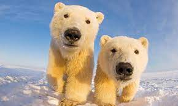
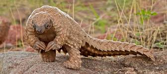

Oso Polar
La Primera Sesión Científica sobre el Oso Polar de 1965 reportó una población de osos polares de entre
5000 y 19 000. La Unión Internacional para la Conservación de la Naturaleza estimó la cantidad de osos
polares entre 22 000 y 27 000 en 1997 y reportaba entre 22 000 y 31 000 en 2021.5
Las amenazas más modernas las constituyen la acumulación de contaminantes en el hielo y atmósfera árticos
y el calentamiento que está afectando su ecosistema. Según estudios canadienses (2005)[cita
requerida], el hielo de las zonas habitadas por estos animales se está derritiendo hasta tres semanas
antes que en la década de 1970, obligando al oso a retirarse a tierra firme sin haber completado sus
reservas de grasa, que pierden durante el verano y el otoño en forma tan crítica que afecta la capacidad
de las hembras para quedar preñadas y minan su capacidad de producir leche para alimentar a sus crías.
Esto ha provocado una caída del 15% en la tasa de nacimientos.[

Lince Ibérico
En 2002 tan solo se pudieron contar noventa y cuatro individuos, de los cuales cincuenta y ocho adultos y
apenas veintisiete hembras en situación reproductiva, repartidos en dos poblaciones, en Andalucía,
aisladas entre sí. Tras numerosos esfuerzos de conservación y recuperación, en 2013 se calculó algo
más de trescientos individuos en aumento, más otra en los Montes de Toledo de unos quince individuos y
por ello escasamente viable, lo que lo convertía en la especie de felino más amenazada del mundo.
En el año 2023 se estimó una población de 1.668 ejemplares en libertad distribuidos principalmente en
España por Andalucía (en los parques de Doñana, Sierra de Andújar, Sierra de Cardeña y Montoro y Sierra
de Cazorla), Castilla-La Mancha (en los Montes de Toledo) y por Extremadura y en Portugal, en el parque
natural del Valle del Guadiana

Pangolín
En el pasado, había mayor diversidad de pangolines, hasta seis familias diferentes. Los pangolines tienen
grandes escamas en la piel -son los únicos mamíferos que las poseen- y viven en las regiones
tropicales de África y Asia. No tienen dientes, y atrapan las hormigas y termitas mediante su larga
lengua estrecha y pegajosa. En general, son animales nocturnos que utilizan su olfato bien
desarrollado para encontrar los insectos de los que se alimentan, pero el pangolín de cola larga también
es activo durante el día. Los pangolines pasan la mayor parte del día durmiendo enroscados en una bola.
El nombre pangolín proviene del malayo peng-guling ("el que se enrolla").